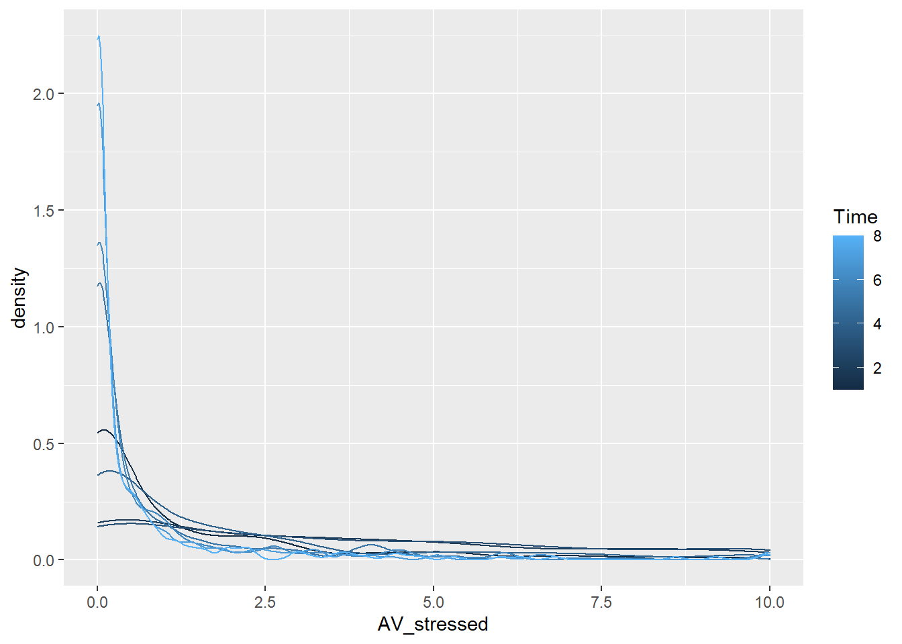
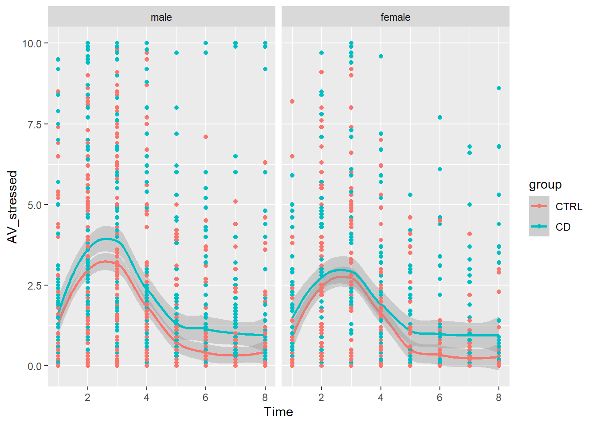
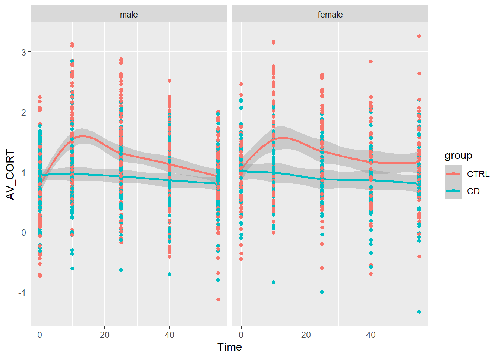
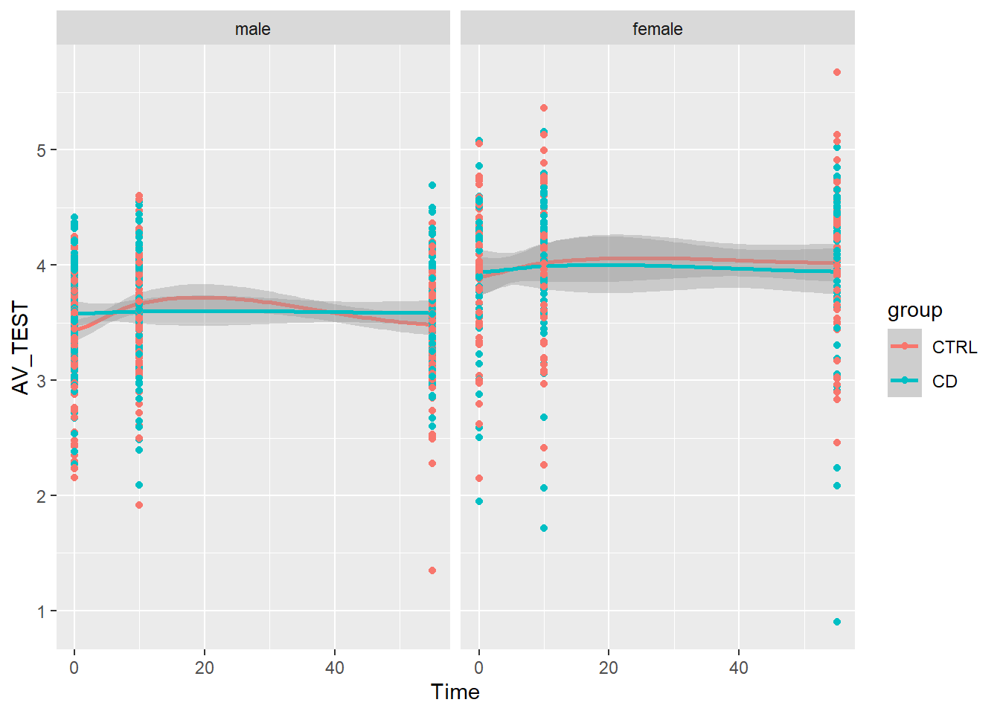
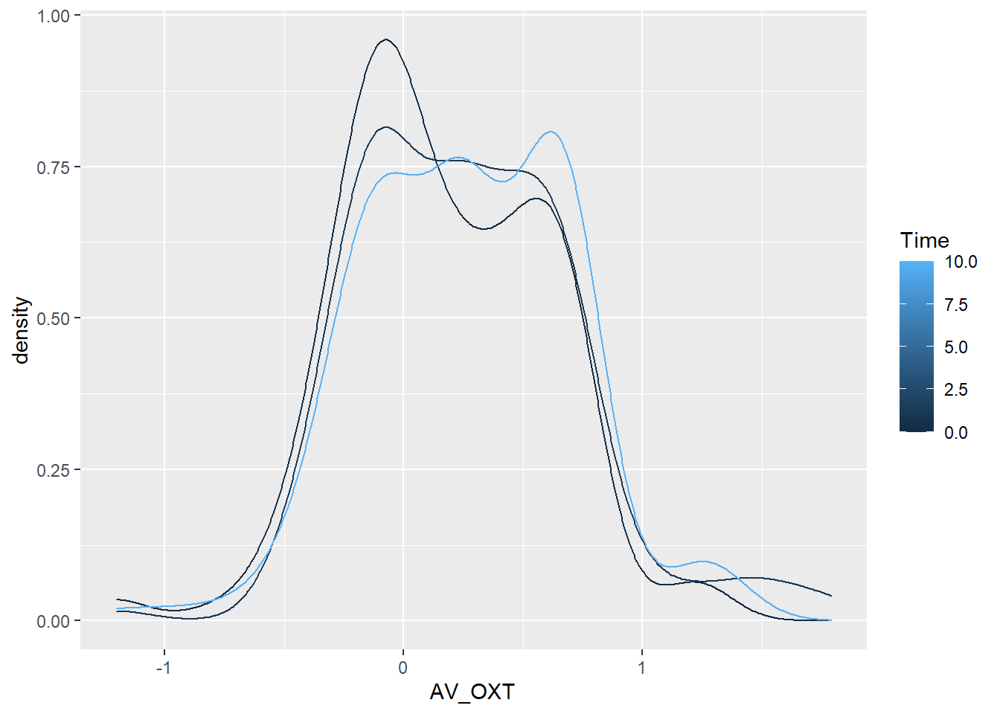
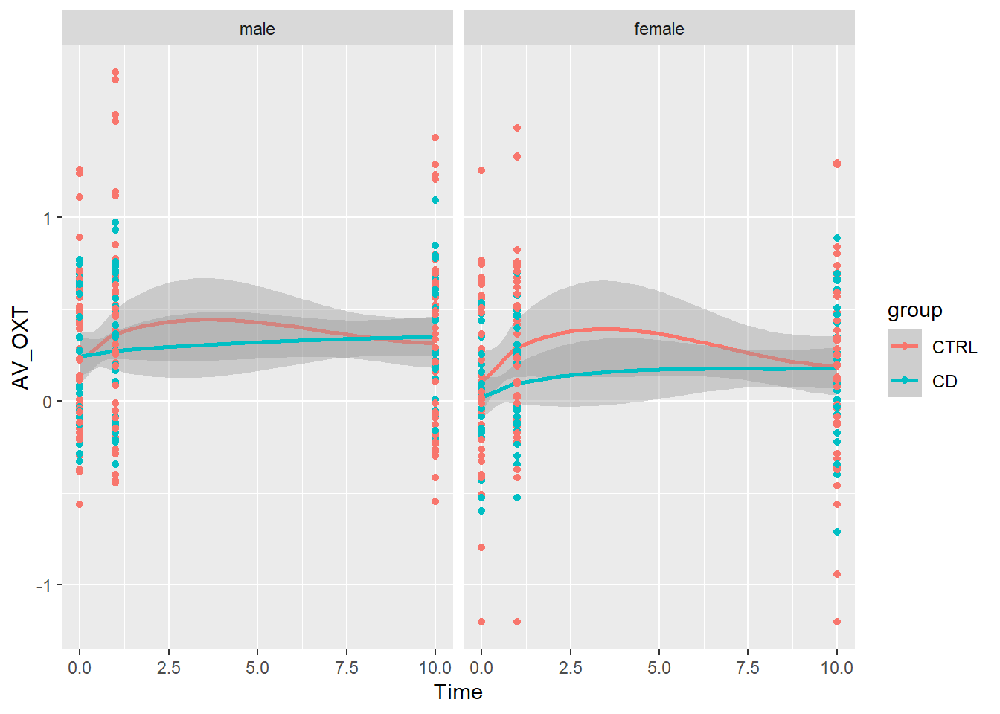

TSST LMM
AGC
15 4 2021
Last updated: 2021-04-16
Checks: 6 1
Knit directory: TSST_Analysis/
This reproducible R Markdown analysis was created with workflowr (version 1.6.2). The Checks tab describes the reproducibility checks that were applied when the results were created. The Past versions tab lists the development history.
Great! Since the R Markdown file has been committed to the Git repository, you know the exact version of the code that produced these results.
Great job! The global environment was empty. Objects defined in the global environment can affect the analysis in your R Markdown file in unknown ways. For reproduciblity it’s best to always run the code in an empty environment.
The command set.seed(20210415) was run prior to running the code in the R Markdown file. Setting a seed ensures that any results that rely on randomness, e.g. subsampling or permutations, are reproducible.
Great job! Recording the operating system, R version, and package versions is critical for reproducibility.
Nice! There were no cached chunks for this analysis, so you can be confident that you successfully produced the results during this run.
Using absolute paths to the files within your workflowr project makes it difficult for you and others to run your code on a different machine. Change the absolute path(s) below to the suggested relative path(s) to make your code more reproducible.
| absolute | relative |
|---|---|
| S:/KJP_Biolabor/Projekte/FemNAT-CD/TSST_Analysis | . |
Great! You are using Git for version control. Tracking code development and connecting the code version to the results is critical for reproducibility.
The results in this page were generated with repository version d5a6e10. See the Past versions tab to see a history of the changes made to the R Markdown and HTML files.
Note that you need to be careful to ensure that all relevant files for the analysis have been committed to Git prior to generating the results (you can use wflow_publish or wflow_git_commit). workflowr only checks the R Markdown file, but you know if there are other scripts or data files that it depends on. Below is the status of the Git repository when the results were generated:
Ignored files:
Ignored: .Rproj.user/
Untracked files:
Untracked: data/13.04.2021_290_170_CORTAUCsplit.sav
Note that any generated files, e.g. HTML, png, CSS, etc., are not included in this status report because it is ok for generated content to have uncommitted changes.
There are no past versions. Publish this analysis with wflow_publish() to start tracking its development.
Prepare
read and check data
df = as.data.frame(read_sav(paste0(home,"/data/13.04.2021_290_170_CORTAUCsplit.sav")))
df$group = drop(factor(df$group, levels = c(1,2), labels=c("CD", "CTRL"))) %>% relevel(., ref="CTRL")
df$centre = drop(factor(df$centre, levels = c(1,2,3,4,5), labels=c("FFM", "AAC", "BLB", "BCN", "SZG")))
df$any_med_ccept = drop(factor(df$any_med_ccept, levels = c(0,1),
labels=c("no_med", "med")))%>% relevel(., ref="no_med")
df$smoking_yes_no = drop(factor(df$smoking_yes_no, levels = c(0,1),
labels=c("no_smk", "smk")))%>% relevel(., ref="no_smk")
df$gender = drop(factor(df$gender, levels = c(1,2),
labels=c("male", "female")))%>% relevel(., ref="male")
table(df$group, useNA = "always")
CTRL CD <NA>
160 130 0 table(df$centre, useNA = "always")
FFM AAC BLB BCN SZG <NA>
144 21 29 56 40 0 table(df$any_med_ccept, useNA = "always")
no_med med <NA>
218 72 0 table(df$smoking_yes_no, useNA = "always")
no_smk smk <NA>
198 92 0 table(df$gender, useNA = "always")
male female <NA>
186 104 0 UV = c("centre","age_meancentered", "explstart_meancentered_min",
"BMI_imp_meancentered", "any_med_ccept", "smoking_yes_no", "gender", "group")
AV = list(
AV_stressed = c(stressed_1=1, stressed_2=2,
stressed_3=3, stressed_4=4,
stressed_5=5, stressed_6=6,
stressed_7=7, stressed_8=8),
AV_CORT = c(CORT_BL_log=0, CORT_10_log=10, CORT_25_log=25, CORT_40_log=40, CORT_55_log=55) ,
AV_TEST = c(TEST_BL_log=0, TEST_10_log=10, TEST_55_log=55),
AV_OXT = c(OXT_BL_log=0, OXT_1_log=1, OXT_10_log=10) )
model = "DV~1+centre+age_meancentered+explstart_meancentered_min+BMI_imp_meancentered+any_med_ccept+smoking_yes_no+gender+group+Time+gender*group+Time*group+gender*Time*group+(1|twuid)"
# do not include site in correlation plot
tmpframe = df[,UV[!UV%in% c("centre")]] %>% mutate_if(is.factor, function(x) as.numeric(x)-1)
corrplot::corrplot(cor(tmpframe, use = "pairwise"))
complete cohort descriptives
res = compareGroups(group~., data = df[,UV])
#summary(res)
export_table <- createTable(res)
export_table
--------Summary descriptives table by 'group'---------
______________________________________________________________
CTRL CD p.overall
N=160 N=130
¯¯¯¯¯¯¯¯¯¯¯¯¯¯¯¯¯¯¯¯¯¯¯¯¯¯¯¯¯¯¯¯¯¯¯¯¯¯¯¯¯¯¯¯¯¯¯¯¯¯¯¯¯¯¯¯¯¯¯¯¯¯
centre: 0.013
FFM 81 (50.6%) 63 (48.5%)
AAC 5 (3.12%) 16 (12.3%)
BLB 14 (8.75%) 15 (11.5%)
BCN 32 (20.0%) 24 (18.5%)
SZG 28 (17.5%) 12 (9.23%)
age_meancentered -0.03 (2.07) 0.01 (1.78) 0.853
explstart_meancentered_min 1.66 (53.5) -0.05 (55.5) 0.791
BMI_imp_meancentered -0.98 (3.79) 1.31 (5.77) <0.001
any_med_ccept: <0.001
no_med 146 (91.2%) 72 (55.4%)
med 14 (8.75%) 58 (44.6%)
smoking_yes_no: <0.001
no_smk 144 (90.0%) 54 (41.5%)
smk 16 (10.0%) 76 (58.5%)
gender: 0.829
male 104 (65.0%) 82 (63.1%)
female 56 (35.0%) 48 (36.9%)
¯¯¯¯¯¯¯¯¯¯¯¯¯¯¯¯¯¯¯¯¯¯¯¯¯¯¯¯¯¯¯¯¯¯¯¯¯¯¯¯¯¯¯¯¯¯¯¯¯¯¯¯¯¯¯¯¯¯¯¯¯¯ male only cohort descriptives
res = compareGroups(group~., data = df[,UV], subset = gender=="male")Warning in compare.i(X[, i], y = y, selec.i = selec[i], method.i = method[i], :
Some levels of 'gender' are removed since no observation in that/those levelsexport_table <- createTable(res)
export_table
--------Summary descriptives table by 'group'---------
_____________________________________________________________
CTRL CD p.overall
N=104 N=82
¯¯¯¯¯¯¯¯¯¯¯¯¯¯¯¯¯¯¯¯¯¯¯¯¯¯¯¯¯¯¯¯¯¯¯¯¯¯¯¯¯¯¯¯¯¯¯¯¯¯¯¯¯¯¯¯¯¯¯¯¯
centre: 0.002
FFM 49 (47.1%) 29 (35.4%)
AAC 2 (1.92%) 13 (15.9%)
BLB 14 (13.5%) 15 (18.3%)
BCN 16 (15.4%) 16 (19.5%)
SZG 23 (22.1%) 9 (11.0%)
age_meancentered -0.13 (2.07) 0.12 (1.54) 0.342
explstart_meancentered_min 8.40 (53.6) 0.43 (58.0) 0.337
BMI_imp_meancentered -1.07 (3.92) 1.89 (6.54) <0.001
any_med_ccept: <0.001
no_med 92 (88.5%) 34 (41.5%)
med 12 (11.5%) 48 (58.5%)
smoking_yes_no: <0.001
no_smk 97 (93.3%) 31 (37.8%)
smk 7 (6.73%) 51 (62.2%)
gender: male 104 (100%) 82 (100%) .
¯¯¯¯¯¯¯¯¯¯¯¯¯¯¯¯¯¯¯¯¯¯¯¯¯¯¯¯¯¯¯¯¯¯¯¯¯¯¯¯¯¯¯¯¯¯¯¯¯¯¯¯¯¯¯¯¯¯¯¯¯ female only cohort descriptives
res = compareGroups(group~., data = df[,UV], subset = gender=="female")Warning in compare.i(X[, i], y = y, selec.i = selec[i], method.i = method[i], :
Some levels of 'centre' are removed since no observation in that/those levelsWarning in chisq.test(xx, correct = FALSE): Chi-squared approximation may be
incorrect
Warning in chisq.test(xx, correct = FALSE): Chi-squared approximation may be
incorrectWarning in compare.i(X[, i], y = y, selec.i = selec[i], method.i = method[i], :
Some levels of 'gender' are removed since no observation in that/those levelsexport_table <- createTable(res)
export_table
--------Summary descriptives table by 'group'---------
_______________________________________________________________
CTRL CD p.overall
N=56 N=48
¯¯¯¯¯¯¯¯¯¯¯¯¯¯¯¯¯¯¯¯¯¯¯¯¯¯¯¯¯¯¯¯¯¯¯¯¯¯¯¯¯¯¯¯¯¯¯¯¯¯¯¯¯¯¯¯¯¯¯¯¯¯¯
centre: 0.452
FFM 32 (57.1%) 34 (70.8%)
AAC 3 (5.36%) 3 (6.25%)
BCN 16 (28.6%) 8 (16.7%)
SZG 5 (8.93%) 3 (6.25%)
age_meancentered 0.16 (2.06) -0.17 (2.13) 0.422
explstart_meancentered_min -10.88 (51.4) -0.88 (51.6) 0.326
BMI_imp_meancentered -0.82 (3.55) 0.33 (4.03) 0.128
any_med_ccept: 0.015
no_med 54 (96.4%) 38 (79.2%)
med 2 (3.57%) 10 (20.8%)
smoking_yes_no: <0.001
no_smk 47 (83.9%) 23 (47.9%)
smk 9 (16.1%) 25 (52.1%)
gender: female 56 (100%) 48 (100%) .
¯¯¯¯¯¯¯¯¯¯¯¯¯¯¯¯¯¯¯¯¯¯¯¯¯¯¯¯¯¯¯¯¯¯¯¯¯¯¯¯¯¯¯¯¯¯¯¯¯¯¯¯¯¯¯¯¯¯¯¯¯¯¯ Definitions
IV of interest :
- Gruppe (“group”)
- sex (“gender”)
- Zeitpunkt (“Time”)
- Gruppe x Zeitpunkt
- Gruppe x sex
IV of no interest :
- Site (“centre”)
- Age scaled (“age_meancentered”)
- “explstart_meancentered_min”
- “BMI_imp_meancentered”
- “any_med_ccept”
- “smoking_yes_no”
DV:
- psychologischer Stress („stressed“)
- Cortisol („CORT“)
- Testosteron („TEST”)
- Oxytocin (OXT”)
linear model with mixed effects
We adapted a boxed design by individual over Time
full model: DV~1+centre+age_meancentered+explstart_meancentered_min+BMI_imp_meancentered+any_med_ccept+smoking_yes_no+gender+group+Time+gendergroup+Timegroup+genderTimegroup+(1|twuid)
resall = list()
for (depvar in names(AV)){
cols = names(AV[[depvar]])
long = df[,c("twuid",cols, UV)] %>%
gather(key = "value", value = "DV", all_of(cols))
long$Time = AV[[depvar]][long$value]
long$twuid = as.factor(long$twuid)
model.lme = lme4::lmer(model, data=long)
model.lme0 = lme4::lmer(DV~1+(1|twuid), data=long)
anovah0 = anova(model.lme0, model.lme)
model_p_val = anovah0$`Pr(>Chisq)`[2]
Res = summary(model.lme)
resall[[depvar]] = model.lme
resall[[paste0(depvar,"_longdat")]] = long
res.coeff = as.data.frame(Res$coefficients)
res.coeff$pvalue = pt(abs(res.coeff$"t value"), 1000000, lower.tail = F) * 2
resall[[paste0(depvar,"_coeff")]]=res.coeff
resall[[paste0(depvar,"_modsig")]]=model_p_val
}refitting model(s) with ML (instead of REML)
refitting model(s) with ML (instead of REML)
refitting model(s) with ML (instead of REML)
refitting model(s) with ML (instead of REML)Results
stressed
overall model p-value (h0 model: stressed~1+(1|twuid)): 8.86e-64
tableplot = function (x){
x %>% dplyr::mutate_if(is.numeric, function(x){as.character(signif(x, 3))}) %>% kbl() %>% kable_classic()
}
depvar = "AV_stressed"
resall[[paste0(depvar, "_coeff")]] %>% tableplot()| Estimate | Std. Error | t value | pvalue | |
|---|---|---|---|---|
| (Intercept) | 3.04 | 0.233 | 13.1 | 6.38e-39 |
| centreAAC | -0.463 | 0.381 | -1.21 | 0.225 |
| centreBLB | -0.478 | 0.34 | -1.41 | 0.16 |
| centreBCN | 0.144 | 0.269 | 0.536 | 0.592 |
| centreSZG | 0.00724 | 0.295 | 0.0245 | 0.98 |
| age_meancentered | -0.0109 | 0.0562 | -0.193 | 0.847 |
| explstart_meancentered_min | -0.00108 | 0.00176 | -0.611 | 0.541 |
| BMI_imp_meancentered | 0.0268 | 0.0198 | 1.35 | 0.176 |
| any_med_cceptmed | 0.18 | 0.252 | 0.713 | 0.476 |
| smoking_yes_nosmk | 0.302 | 0.262 | 1.15 | 0.25 |
| genderfemale | -0.654 | 0.345 | -1.9 | 0.0578 |
| groupCD | 0.255 | 0.358 | 0.713 | 0.476 |
| Time | -0.35 | 0.0282 | -12.4 | 2.05e-35 |
| genderfemale:groupCD | -0.142 | 0.512 | -0.278 | 0.781 |
| groupCD:Time | 0.0184 | 0.0424 | 0.433 | 0.665 |
| genderfemale:Time | 0.0615 | 0.0476 | 1.29 | 0.196 |
| genderfemale:groupCD:Time | 0.0362 | 0.0706 | 0.513 | 0.608 |
ggplot(data = resall[[paste0(depvar, "_longdat")]],
aes(DV, group=Time, col=Time)) +
ylab("density") + xlab(depvar)+
geom_density()
ggplot(data = resall[[paste0(depvar, "_longdat")]],
aes(Time,DV, col=group)) +
ylab(depvar) + xlab("Time")+
geom_smooth(method = 'loess') + geom_point() + facet_wrap(~gender)`geom_smooth()` using formula 'y ~ x'
CORT
overall model p-value (h0 model: CORT~1+(1|twuid)): 2.48e-12
depvar = "AV_CORT"
resall[[paste0(depvar, "_coeff")]] %>% tableplot()| Estimate | Std. Error | t value | pvalue | |
|---|---|---|---|---|
| (Intercept) | 1.3 | 0.0688 | 18.9 | 2.77e-79 |
| centreAAC | 0.0128 | 0.126 | 0.102 | 0.919 |
| centreBLB | -0.141 | 0.113 | -1.25 | 0.21 |
| centreBCN | -0.136 | 0.089 | -1.53 | 0.125 |
| centreSZG | -0.142 | 0.0977 | -1.45 | 0.146 |
| age_meancentered | 0.088 | 0.0186 | 4.73 | 2.23e-06 |
| explstart_meancentered_min | -0.00231 | 0.000582 | -3.97 | 7.27e-05 |
| BMI_imp_meancentered | 0.00594 | 0.00655 | 0.907 | 0.364 |
| any_med_cceptmed | -0.0331 | 0.0836 | -0.397 | 0.692 |
| smoking_yes_nosmk | -0.0596 | 0.0868 | -0.687 | 0.492 |
| genderfemale | 0.022 | 0.0978 | 0.225 | 0.822 |
| groupCD | -0.218 | 0.106 | -2.05 | 0.0405 |
| Time | -0.0017 | 0.000899 | -1.89 | 0.0592 |
| genderfemale:groupCD | -0.0132 | 0.145 | -0.0906 | 0.928 |
| groupCD:Time | -0.00121 | 0.00135 | -0.896 | 0.37 |
| genderfemale:Time | 0.000163 | 0.00152 | 0.107 | 0.914 |
| genderfemale:groupCD:Time | -0.00108 | 0.00225 | -0.48 | 0.631 |
ggplot(data = resall[[paste0(depvar, "_longdat")]],
aes(DV, group=Time, col=Time)) +
ylab("density") + xlab(depvar)+
geom_density()ggplot(data = resall[[paste0(depvar, "_longdat")]],
aes(Time,DV, col=group)) +
ylab(depvar) + xlab("Time")+
geom_smooth(method = 'loess') + geom_point()+ facet_wrap(~gender)`geom_smooth()` using formula 'y ~ x'
TEST
overall model p-value (h0 model: TEST~1+(1|twuid)): 1.84e-20
depvar = "AV_TEST"
resall[[paste0(depvar, "_coeff")]] %>% tableplot()| Estimate | Std. Error | t value | pvalue | |
|---|---|---|---|---|
| (Intercept) | 3.54 | 0.0592 | 59.9 | 0 |
| centreAAC | 0.35 | 0.113 | 3.08 | 0.00205 |
| centreBLB | -0.0259 | 0.101 | -0.255 | 0.799 |
| centreBCN | 0.0348 | 0.08 | 0.434 | 0.664 |
| centreSZG | 0.221 | 0.0878 | 2.51 | 0.0119 |
| age_meancentered | 0.0726 | 0.0167 | 4.34 | 1.44e-05 |
| explstart_meancentered_min | -0.002 | 0.000524 | -3.83 | 0.000129 |
| BMI_imp_meancentered | 0.0205 | 0.00589 | 3.48 | 0.000497 |
| any_med_cceptmed | -0.116 | 0.0752 | -1.55 | 0.121 |
| smoking_yes_nosmk | 0.0837 | 0.078 | 1.07 | 0.283 |
| genderfemale | 0.334 | 0.0824 | 4.05 | 5.12e-05 |
| groupCD | -0.0656 | 0.0916 | -0.717 | 0.474 |
| Time | -0.00058 | 0.000484 | -1.2 | 0.231 |
| genderfemale:groupCD | 0.0979 | 0.122 | 0.8 | 0.424 |
| groupCD:Time | 0.00058 | 0.00073 | 0.795 | 0.426 |
| genderfemale:Time | 0.00208 | 0.000819 | 2.53 | 0.0113 |
| genderfemale:groupCD:Time | -0.00231 | 0.00122 | -1.9 | 0.0573 |
ggplot(data = resall[[paste0(depvar, "_longdat")]],
aes(DV, group=Time, col=Time)) +
ylab("density") + xlab(depvar)+
geom_density()ggplot(data = resall[[paste0(depvar, "_longdat")]],
aes(Time,DV, col=group)) +
ylab(depvar) + xlab("Time")+
geom_smooth(method = 'loess') + geom_point()+ facet_wrap(~gender)`geom_smooth()` using formula 'y ~ x'Warning in simpleLoess(y, x, w, span, degree = degree, parametric =
parametric, : pseudoinverse used at -0.275Warning in simpleLoess(y, x, w, span, degree = degree, parametric =
parametric, : neighborhood radius 55.275Warning in simpleLoess(y, x, w, span, degree = degree, parametric =
parametric, : reciprocal condition number 9.612e-016Warning in simpleLoess(y, x, w, span, degree = degree, parametric =
parametric, : There are other near singularities as well. 3055.3Warning in predLoess(object$y, object$x, newx = if
(is.null(newdata)) object$x else if (is.data.frame(newdata))
as.matrix(model.frame(delete.response(terms(object)), : pseudoinverse used at
-0.275Warning in predLoess(object$y, object$x, newx = if
(is.null(newdata)) object$x else if (is.data.frame(newdata))
as.matrix(model.frame(delete.response(terms(object)), : neighborhood radius
55.275Warning in predLoess(object$y, object$x, newx = if
(is.null(newdata)) object$x else if (is.data.frame(newdata))
as.matrix(model.frame(delete.response(terms(object)), : reciprocal condition
number 9.612e-016Warning in predLoess(object$y, object$x, newx = if
(is.null(newdata)) object$x else if (is.data.frame(newdata))
as.matrix(model.frame(delete.response(terms(object)), : There are other near
singularities as well. 3055.3Warning in simpleLoess(y, x, w, span, degree = degree, parametric =
parametric, : pseudoinverse used at -0.275Warning in simpleLoess(y, x, w, span, degree = degree, parametric =
parametric, : neighborhood radius 55.275Warning in simpleLoess(y, x, w, span, degree = degree, parametric =
parametric, : reciprocal condition number 4.7148e-016Warning in simpleLoess(y, x, w, span, degree = degree, parametric =
parametric, : There are other near singularities as well. 3055.3Warning in predLoess(object$y, object$x, newx = if
(is.null(newdata)) object$x else if (is.data.frame(newdata))
as.matrix(model.frame(delete.response(terms(object)), : pseudoinverse used at
-0.275Warning in predLoess(object$y, object$x, newx = if
(is.null(newdata)) object$x else if (is.data.frame(newdata))
as.matrix(model.frame(delete.response(terms(object)), : neighborhood radius
55.275Warning in predLoess(object$y, object$x, newx = if
(is.null(newdata)) object$x else if (is.data.frame(newdata))
as.matrix(model.frame(delete.response(terms(object)), : reciprocal condition
number 4.7148e-016Warning in predLoess(object$y, object$x, newx = if
(is.null(newdata)) object$x else if (is.data.frame(newdata))
as.matrix(model.frame(delete.response(terms(object)), : There are other near
singularities as well. 3055.3Warning in simpleLoess(y, x, w, span, degree = degree, parametric =
parametric, : pseudoinverse used at -0.275Warning in simpleLoess(y, x, w, span, degree = degree, parametric =
parametric, : neighborhood radius 55.275Warning in simpleLoess(y, x, w, span, degree = degree, parametric =
parametric, : reciprocal condition number 5.7748e-016Warning in simpleLoess(y, x, w, span, degree = degree, parametric =
parametric, : There are other near singularities as well. 3055.3Warning in predLoess(object$y, object$x, newx = if
(is.null(newdata)) object$x else if (is.data.frame(newdata))
as.matrix(model.frame(delete.response(terms(object)), : pseudoinverse used at
-0.275Warning in predLoess(object$y, object$x, newx = if
(is.null(newdata)) object$x else if (is.data.frame(newdata))
as.matrix(model.frame(delete.response(terms(object)), : neighborhood radius
55.275Warning in predLoess(object$y, object$x, newx = if
(is.null(newdata)) object$x else if (is.data.frame(newdata))
as.matrix(model.frame(delete.response(terms(object)), : reciprocal condition
number 5.7748e-016Warning in predLoess(object$y, object$x, newx = if
(is.null(newdata)) object$x else if (is.data.frame(newdata))
as.matrix(model.frame(delete.response(terms(object)), : There are other near
singularities as well. 3055.3Warning in simpleLoess(y, x, w, span, degree = degree, parametric =
parametric, : pseudoinverse used at -0.275Warning in simpleLoess(y, x, w, span, degree = degree, parametric =
parametric, : neighborhood radius 55.275Warning in simpleLoess(y, x, w, span, degree = degree, parametric =
parametric, : reciprocal condition number 4.7108e-016Warning in simpleLoess(y, x, w, span, degree = degree, parametric =
parametric, : There are other near singularities as well. 3055.3Warning in predLoess(object$y, object$x, newx = if
(is.null(newdata)) object$x else if (is.data.frame(newdata))
as.matrix(model.frame(delete.response(terms(object)), : pseudoinverse used at
-0.275Warning in predLoess(object$y, object$x, newx = if
(is.null(newdata)) object$x else if (is.data.frame(newdata))
as.matrix(model.frame(delete.response(terms(object)), : neighborhood radius
55.275Warning in predLoess(object$y, object$x, newx = if
(is.null(newdata)) object$x else if (is.data.frame(newdata))
as.matrix(model.frame(delete.response(terms(object)), : reciprocal condition
number 4.7108e-016Warning in predLoess(object$y, object$x, newx = if
(is.null(newdata)) object$x else if (is.data.frame(newdata))
as.matrix(model.frame(delete.response(terms(object)), : There are other near
singularities as well. 3055.3
OXT
overall model p-value (h0 model: OXT~1+(1|twuid)): 0.0901
depvar = "AV_OXT"
resall[[paste0(depvar, "_coeff")]] %>% tableplot()| Estimate | Std. Error | t value | pvalue | |
|---|---|---|---|---|
| (Intercept) | 0.324 | 0.0707 | 4.58 | 4.73e-06 |
| centreAAC | 0.0127 | 0.123 | 0.103 | 0.918 |
| centreBLB | -0.0917 | 0.106 | -0.866 | 0.386 |
| centreBCN | -0.0908 | 0.113 | -0.807 | 0.419 |
| centreSZG | -0.0728 | 0.188 | -0.386 | 0.699 |
| age_meancentered | 0.0237 | 0.0192 | 1.23 | 0.218 |
| explstart_meancentered_min | -0.000179 | 0.000816 | -0.219 | 0.827 |
| BMI_imp_meancentered | -0.0081 | 0.00598 | -1.35 | 0.176 |
| any_med_cceptmed | -0.0142 | 0.083 | -0.171 | 0.864 |
| smoking_yes_nosmk | 0.0955 | 0.0875 | 1.09 | 0.275 |
| genderfemale | -0.129 | 0.0953 | -1.36 | 0.174 |
| groupCD | -0.0688 | 0.108 | -0.639 | 0.523 |
| Time | 0.00286 | 0.0046 | 0.62 | 0.535 |
| genderfemale:groupCD | -0.0975 | 0.136 | -0.716 | 0.474 |
| groupCD:Time | 0.00696 | 0.00665 | 1.05 | 0.296 |
| genderfemale:Time | -0.00235 | 0.00682 | -0.344 | 0.731 |
| genderfemale:groupCD:Time | 0.00555 | 0.00997 | 0.557 | 0.578 |
ggplot(data = resall[[paste0(depvar, "_longdat")]],
aes(DV, group=Time, col=Time)) +
ylab("density") + xlab(depvar)+
geom_density()Warning: Removed 360 rows containing non-finite values (stat_density).
ggplot(data = resall[[paste0(depvar, "_longdat")]],
aes(Time,DV, col=group)) +
ylab(depvar) + xlab("Time")+
geom_smooth(method = 'loess') + geom_point()+ facet_wrap(~gender)`geom_smooth()` using formula 'y ~ x'Warning: Removed 360 rows containing non-finite values (stat_smooth).Warning in simpleLoess(y, x, w, span, degree = degree, parametric =
parametric, : pseudoinverse used at -0.05Warning in simpleLoess(y, x, w, span, degree = degree, parametric =
parametric, : neighborhood radius 10.05Warning in simpleLoess(y, x, w, span, degree = degree, parametric =
parametric, : reciprocal condition number 5.6675e-016Warning in simpleLoess(y, x, w, span, degree = degree, parametric =
parametric, : There are other near singularities as well. 101Warning in predLoess(object$y, object$x, newx = if
(is.null(newdata)) object$x else if (is.data.frame(newdata))
as.matrix(model.frame(delete.response(terms(object)), : pseudoinverse used at
-0.05Warning in predLoess(object$y, object$x, newx = if
(is.null(newdata)) object$x else if (is.data.frame(newdata))
as.matrix(model.frame(delete.response(terms(object)), : neighborhood radius
10.05Warning in predLoess(object$y, object$x, newx = if
(is.null(newdata)) object$x else if (is.data.frame(newdata))
as.matrix(model.frame(delete.response(terms(object)), : reciprocal condition
number 5.6675e-016Warning in predLoess(object$y, object$x, newx = if
(is.null(newdata)) object$x else if (is.data.frame(newdata))
as.matrix(model.frame(delete.response(terms(object)), : There are other near
singularities as well. 101Warning in simpleLoess(y, x, w, span, degree = degree, parametric =
parametric, : pseudoinverse used at -0.05Warning in simpleLoess(y, x, w, span, degree = degree, parametric =
parametric, : neighborhood radius 10.05Warning in simpleLoess(y, x, w, span, degree = degree, parametric =
parametric, : reciprocal condition number 5.5247e-016Warning in simpleLoess(y, x, w, span, degree = degree, parametric =
parametric, : There are other near singularities as well. 101Warning in predLoess(object$y, object$x, newx = if
(is.null(newdata)) object$x else if (is.data.frame(newdata))
as.matrix(model.frame(delete.response(terms(object)), : pseudoinverse used at
-0.05Warning in predLoess(object$y, object$x, newx = if
(is.null(newdata)) object$x else if (is.data.frame(newdata))
as.matrix(model.frame(delete.response(terms(object)), : neighborhood radius
10.05Warning in predLoess(object$y, object$x, newx = if
(is.null(newdata)) object$x else if (is.data.frame(newdata))
as.matrix(model.frame(delete.response(terms(object)), : reciprocal condition
number 5.5247e-016Warning in predLoess(object$y, object$x, newx = if
(is.null(newdata)) object$x else if (is.data.frame(newdata))
as.matrix(model.frame(delete.response(terms(object)), : There are other near
singularities as well. 101Warning in simpleLoess(y, x, w, span, degree = degree, parametric =
parametric, : pseudoinverse used at -0.05Warning in simpleLoess(y, x, w, span, degree = degree, parametric =
parametric, : neighborhood radius 10.05Warning in simpleLoess(y, x, w, span, degree = degree, parametric =
parametric, : reciprocal condition number 1.0535e-016Warning in simpleLoess(y, x, w, span, degree = degree, parametric =
parametric, : There are other near singularities as well. 101Warning in predLoess(object$y, object$x, newx = if
(is.null(newdata)) object$x else if (is.data.frame(newdata))
as.matrix(model.frame(delete.response(terms(object)), : pseudoinverse used at
-0.05Warning in predLoess(object$y, object$x, newx = if
(is.null(newdata)) object$x else if (is.data.frame(newdata))
as.matrix(model.frame(delete.response(terms(object)), : neighborhood radius
10.05Warning in predLoess(object$y, object$x, newx = if
(is.null(newdata)) object$x else if (is.data.frame(newdata))
as.matrix(model.frame(delete.response(terms(object)), : reciprocal condition
number 1.0535e-016Warning in predLoess(object$y, object$x, newx = if
(is.null(newdata)) object$x else if (is.data.frame(newdata))
as.matrix(model.frame(delete.response(terms(object)), : There are other near
singularities as well. 101Warning in simpleLoess(y, x, w, span, degree = degree, parametric =
parametric, : pseudoinverse used at -0.05Warning in simpleLoess(y, x, w, span, degree = degree, parametric =
parametric, : neighborhood radius 10.05Warning in simpleLoess(y, x, w, span, degree = degree, parametric =
parametric, : reciprocal condition number 5.9616e-016Warning in simpleLoess(y, x, w, span, degree = degree, parametric =
parametric, : There are other near singularities as well. 101Warning in predLoess(object$y, object$x, newx = if
(is.null(newdata)) object$x else if (is.data.frame(newdata))
as.matrix(model.frame(delete.response(terms(object)), : pseudoinverse used at
-0.05Warning in predLoess(object$y, object$x, newx = if
(is.null(newdata)) object$x else if (is.data.frame(newdata))
as.matrix(model.frame(delete.response(terms(object)), : neighborhood radius
10.05Warning in predLoess(object$y, object$x, newx = if
(is.null(newdata)) object$x else if (is.data.frame(newdata))
as.matrix(model.frame(delete.response(terms(object)), : reciprocal condition
number 5.9616e-016Warning in predLoess(object$y, object$x, newx = if
(is.null(newdata)) object$x else if (is.data.frame(newdata))
as.matrix(model.frame(delete.response(terms(object)), : There are other near
singularities as well. 101Warning: Removed 360 rows containing missing values (geom_point).
sessionInfo()R version 4.0.4 (2021-02-15)
Platform: x86_64-w64-mingw32/x64 (64-bit)
Running under: Windows 10 x64 (build 18363)
Matrix products: default
locale:
[1] LC_COLLATE=German_Germany.1252 LC_CTYPE=German_Germany.1252
[3] LC_MONETARY=German_Germany.1252 LC_NUMERIC=C
[5] LC_TIME=German_Germany.1252
attached base packages:
[1] stats graphics grDevices utils datasets methods base
other attached packages:
[1] compareGroups_4.5.1 caret_6.0-86 lattice_0.20-41
[4] kableExtra_1.3.4 lme4_1.1-26 Matrix_1.3-2
[7] data.table_1.14.0 forcats_0.5.1 stringr_1.4.0
[10] dplyr_1.0.5 purrr_0.3.4 readr_1.4.0
[13] tidyr_1.1.3 tibble_3.1.0 ggplot2_3.3.3
[16] tidyverse_1.3.0 haven_2.3.1 workflowr_1.6.2
loaded via a namespace (and not attached):
[1] minqa_1.2.4 colorspace_2.0-0 ellipsis_0.3.1
[4] class_7.3-18 rprojroot_2.0.2 flextable_0.6.4
[7] base64enc_0.1-3 fs_1.5.0 rstudioapi_0.13
[10] mice_3.13.0 farver_2.1.0 prodlim_2019.11.13
[13] fansi_0.4.2 lubridate_1.7.10 xml2_1.3.2
[16] codetools_0.2-18 splines_4.0.4 knitr_1.31
[19] jsonlite_1.7.2 nloptr_1.2.2.2 pROC_1.17.0.1
[22] broom_0.7.5 dbplyr_2.1.0 compiler_4.0.4
[25] httr_1.4.2 backports_1.2.1 assertthat_0.2.1
[28] cli_2.3.1 later_1.1.0.1 htmltools_0.5.1.1
[31] tools_4.0.4 gtable_0.3.0 glue_1.4.2
[34] reshape2_1.4.4 Rcpp_1.0.6 cellranger_1.1.0
[37] jquerylib_0.1.3 vctrs_0.3.6 writexl_1.3.1
[40] svglite_2.0.0 nlme_3.1-152 iterators_1.0.13
[43] timeDate_3043.102 xfun_0.21 gower_0.2.2
[46] ps_1.6.0 rvest_1.0.0 lifecycle_1.0.0
[49] statmod_1.4.35 MASS_7.3-53.1 scales_1.1.1
[52] ipred_0.9-11 hms_1.0.0 promises_1.2.0.1
[55] parallel_4.0.4 HardyWeinberg_1.7.1 yaml_2.2.1
[58] gdtools_0.2.3 sass_0.3.1 rpart_4.1-15
[61] stringi_1.5.3 highr_0.8 corrplot_0.84
[64] foreach_1.5.1 zip_2.1.1 boot_1.3-27
[67] truncnorm_1.0-8 lava_1.6.9 chron_2.3-56
[70] rlang_0.4.10 pkgconfig_2.0.3 systemfonts_1.0.1
[73] Rsolnp_1.16 evaluate_0.14 labeling_0.4.2
[76] recipes_0.1.15 tidyselect_1.1.0 plyr_1.8.6
[79] magrittr_2.0.1 R6_2.5.0 generics_0.1.0
[82] DBI_1.1.1 mgcv_1.8-34 pillar_1.5.1
[85] withr_2.4.1 survival_3.2-9 nnet_7.3-15
[88] modelr_0.1.8 crayon_1.4.1 uuid_0.1-4
[91] utf8_1.1.4 officer_0.3.17 rmarkdown_2.7
[94] grid_4.0.4 readxl_1.3.1 git2r_0.28.0
[97] ModelMetrics_1.2.2.2 reprex_1.0.0 digest_0.6.27
[100] webshot_0.5.2 httpuv_1.5.5 stats4_4.0.4
[103] munsell_0.5.0 viridisLite_0.3.0 bslib_0.2.4